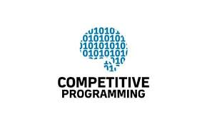

COMPETITIVE PROGRAMMING
"Although, it is a sport and not a field, I feel the most attracted towards competitive programming. It fuses everything I like: competition, maths and logic. I wish to participate and win in at least one big competitive programming event in the upcoming four years of B.Tech."
MACHINE LEARNING/ARTIFICIAL INTELLIGENCE
" Learning and Artificial Intelligence are the current buzzwords in the technological world. To understand the world of technology in a much better way, it is necessary for us to know about the applications and consequences of ML/AI. ""